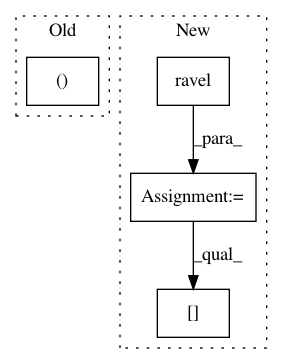

b4757f7fe5b8d238ebb4cb150aeba52306c12071,sklearn/inspection/_plot/partial_dependence.py,PartialDependenceDisplay,plot,#PartialDependenceDisplay#,425
Before Change
self.axes_ = np.empty((n_rows, n_cols), dtype=np.object)
self.lines_ = np.empty((n_rows, n_cols), dtype=np.object)
self.contours_ = np.empty((n_rows, n_cols), dtype=np.object)
axes_ravel = self.axes_.ravel()
After Change
lines_ravel = self.lines_.ravel(order="C")
contours_ravel = self.contours_.ravel(order="C")
vlines_ravel = self.deciles_vlines_.ravel(order="C")
hlines_ravel = self.deciles_hlines_.ravel(order="C")
for i, axi, fx, (avg_preds, values) in zip(count(),
self.axes_.ravel(),
self.features,
self.pd_results):
if len(values) == 1:
lines_ravel[i] = axi.plot(values[0],
avg_preds[self.target_idx].ravel(),
**line_kw)[0]
else:
// contour plot
XX, YY = np.meshgrid(values[0], values[1])
Z = avg_preds[self.target_idx].T
CS = axi.contour(XX, YY, Z, levels=Z_level, linewidths=0.5,
colors="k")
contours_ravel[i] = axi.contourf(XX, YY, Z, levels=Z_level,
vmax=Z_level[-1],
vmin=Z_level[0],
**contour_kw)
axi.clabel(CS, fmt="%2.2f", colors="k", fontsize=10,
inline=True)
trans = transforms.blended_transform_factory(axi.transData,
axi.transAxes)
ylim = axi.get_ylim()
vlines_ravel[i] = axi.vlines(self.deciles[fx[0]], 0, 0.05,
transform=trans, color="k")
axi.set_ylim(ylim)
// Set xlabel if it is not already set
if not axi.get_xlabel():
axi.set_xlabel(self.feature_names[fx[0]])
if len(values) == 1:
if n_cols is None or i % n_cols == 0:
axi.set_ylabel("Partial dependence")
else:
axi.set_yticklabels([])
axi.set_ylim(self.pdp_lim[1])
else:
// contour plot
trans = transforms.blended_transform_factory(axi.transAxes,
axi.transData)
xlim = axi.get_xlim()
hlines_ravel[i] = axi.hlines(self.deciles[fx[1]], 0, 0.05,
transform=trans, color="k")
// hline erases xlim
axi.set_ylabel(self.feature_names[fx[1]])
In pattern: SUPERPATTERN
Frequency: 4
Non-data size: 4
Instances
Project Name: scikit-learn/scikit-learn
Commit Name: b4757f7fe5b8d238ebb4cb150aeba52306c12071
Time: 2020-04-19
Author: contact@nicolas-hug.com
File Name: sklearn/inspection/_plot/partial_dependence.py
Class Name: PartialDependenceDisplay
Method Name: plot
Project Name: scikit-image/scikit-image
Commit Name: b8a5e5db6c2c0ff9540d84c11c05b21fc6023ae6
Time: 2020-05-04
Author: rfezzani@gmail.com
File Name: skimage/color/colorconv.py
Class Name:
Method Name: rgba2rgb
Project Name: yzhao062/pyod
Commit Name: 24d96c7ec2d80322ceb7a084199b891c9ebf88b9
Time: 2019-03-12
Author: yalmardeny@tssg,org
File Name: pyod/models/sod.py
Class Name: SOD
Method Name: _snn
Project Name: nilearn/nilearn
Commit Name: 6a8a0266b3f2cbae5ce8cce03996f2c55107c969
Time: 2018-10-20
Author: pierre.bellec@gmail.com
File Name: nilearn/plotting/html_stat_map.py
Class Name:
Method Name: view_stat_map